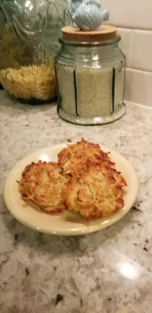

Coquito

Description: Latkes (potato pancakes) are a must-have at Hanukkah,
but are really wonderful any time of the year! This is my mother's recipe,
which is honestly the best potato latke I've had. I usually end up making
a second batch because they disappear so quickly. I've tried other recipes
and always return to this one. Lovely topped with sour cream or applesauce.
Ingredients
- 3 cups shredded potato
- ¼ cup grated onion
- 2 large eggs, beaten
- 6 saltine crackers, or as needed, crushed
- ½ teaspoon salt, or more to taste
- ¼ teaspoon ground black pepper
- ½ cup vegetable oil, or as needed
Steps
- Mix potato, onion, eggs, crushed crackers, salt, and pepper together in a large bowl.
- Heat 1/4 inch oil in a heavy skillet over medium-high heat.
- Cook in batches in the hot oil until browned and crisp, 3 to 5 minutes per side. Drain latkes on a paper towel-line plate.